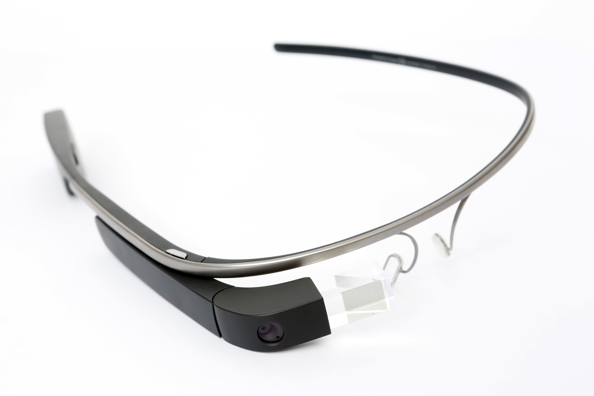
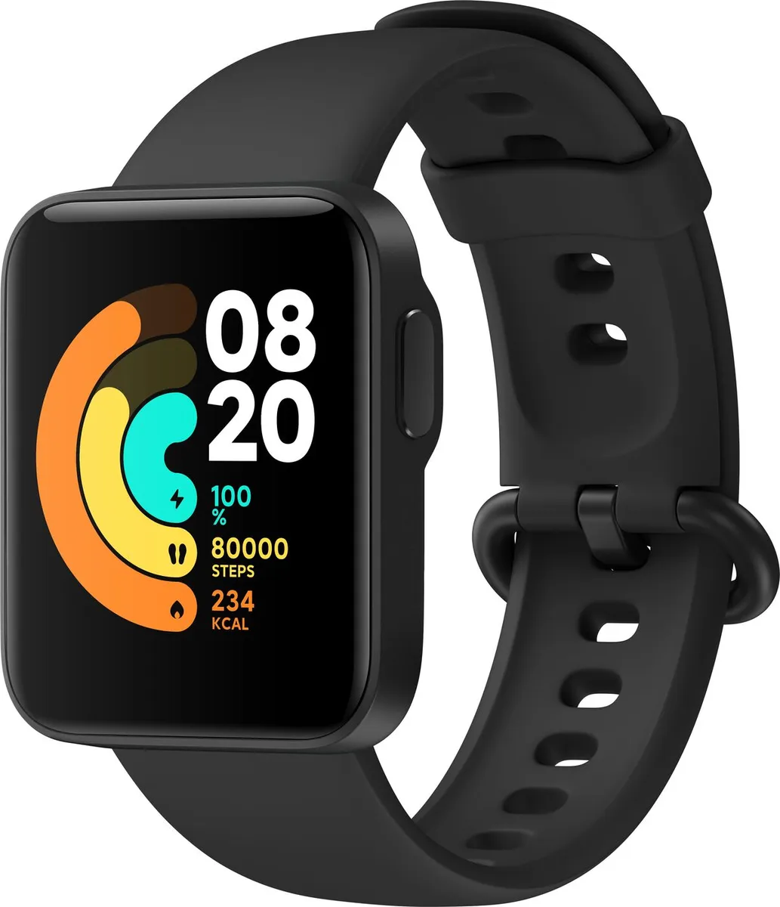
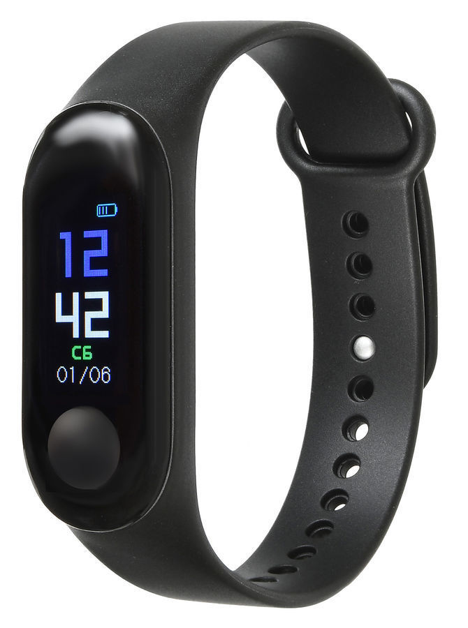
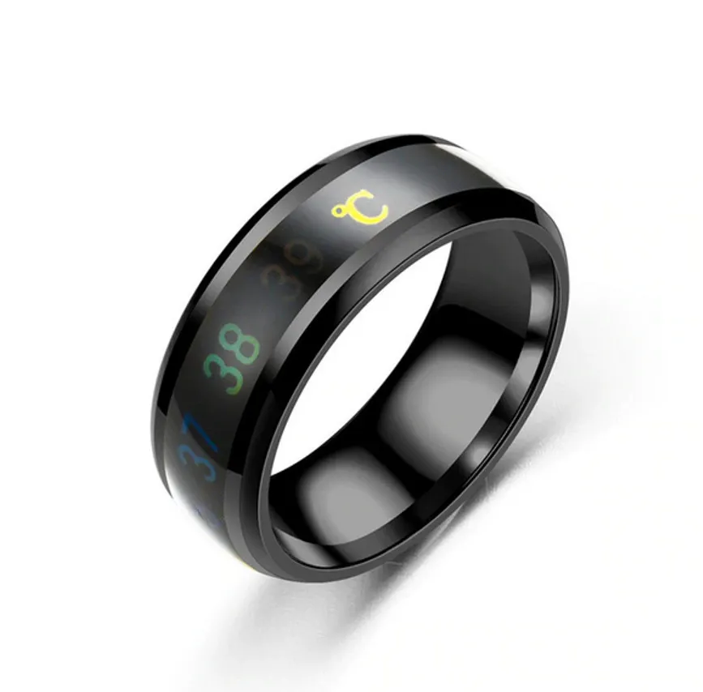

Аппаратное обеспечение¶
Введение¶
Основная задача компьютера — это преобразовывать информацию. Дополнительно к этому информация хранится, получается и выводится.
Примеры компьютеров:
логарифмическая линейка;
sim-карта;
банковские карты с чипом;
устройства в быту — микроволновая печь, мультиварка, кондиционер, стиральная машина.
электронные часы.
В зависимости от того, как представлена информация компьютеры делятся на цифровые и аналоговые. В цифровом компьютере информация представлена в дискретном виде — с помощью чисел. Напротив, в аналоговом компьютере информацию несут непрерывные сигналы — ток, напряжение, давление, излучение, перемещение. Природе не свойственна дискретность, здесь все меняется непрерывно. Информация извне поступает в цифровой компьютер, предварительно оцифровывается, т.е. преобразуется в набор чисел. Оцифровке подвергается звук, изображение, трехмерное тело. Основное устройство, преобразующее непрерывный сигнал в число, называется аналого-цифровым преобразователем.
Большая часть практических задач моделирования сводятся к интегральным и дифференциальным уравнениям математической физики. Обычно такие уравнения нелинейные и не всегда имеют аналитических решений. До появления счетных машин, основными способами получения решений уравнений, было два — физическое моделирование и моделирование аналогиями.
Преимущества цифровых компьютеров — точность, универсальность. Преимущества аналогового компьютера — скорость преобразования. Усилитель звуковых частот — умножение аналогового сигнала. Деление — делитель напряжения на резисторах. Логарифмирование и вычитание. Генерация случайных чисел. Хранилище аналоговых данных — кассеты и пластинки. Нечеткая логика. Аэродинамическая труба. Похожие физические системы используются для симулирования друг друга. Законы масштабирования. Качественное и количественное поведение решения. Нелинейная оптика и гидродинамика.
Уравнение процесса фильтрации жидкости при упруговодонапорном режиме пласта: x1Фxpx+y1Фypy=H*pt , где Фx, Фy — фильтрационные параметры пласта, * — коэффициент упругоемкости, H — мощность пласта. Процессы в электрической сети из сопротивлений и конденсаторов описываются уравнением x1RxUx+y1RyUy=C0Ut . Распределение давления в пласте соответствует распределению напряжения в сетке.
На основе способа реализации компьютера — электронно-вычислительная машина, квантовый компьютер, оптический компьютер, механический компьютер.
Универсальный компьютер можно перепрограммировать, настроив его на решение другой задачи.
Виды компьютеров¶
Персональный компьютер¶
Компьютер, которым пользуется только один человек для решения повседневных задач, называется персональным. Такой компьютер доступен по цене и имеет малый размер. Его пользователь не обладает специальными техническими знаниями. Поэтому на компьютер установлена операционная система с графическим интерфейсом.
{kind=link}
Fig. 2 Типичный настольный персональный компьютер¶
Компьютер применяют для решения бытовых и офисных задач:
выход в интернет;
просмотр фильмов и фотографий;
составление текстовых документов;
Появление общедоступного персонального компьютера связано с трендом миниатюризации и удешевления компьютеров. Это стало возможным благодаря двум важным причинам:
появление интегральных микросхем;
графический интерфейс пользователя;
открытая архитектура персонального компьютера.
Технология изготовления интегральных схем позволила разместить крупные блоки компьютера в небольшого размера микросхемы. Это разрешило две большие проблемы изготовления и обслуживания компьютеров – это удешевление производства и повышение надежности.
Компьютер представляет сложное устройство, для управления которым необходимо знать его внутреннее устройство. Первыми пользователями компьютеров стали их изобретатели. Математики и инженеры. Но большинство людей не обладают специальными знаниями. Превратить компьютер в домашний инструмент позволил графический интерфейс.
В 1981 году компания IBM выпустила на рынок компьютер IBM 5150. Из-за малого бюджета он был спроектирован таким образом, что по максимуму использовать готовые компоненты. Его внутреннее устройство было опубликовано в техническом руководстве. Открытая архитектура и модульная структура. Интерфейсы между модулями были стандартизированы. На разработку дополнительных модулей подключились независимые компании. Из-за высокой конкуренции стоимость компьютера снизилась. Пользователи предпочитали этот компьютер, не привязывая себя. IBM-PC совместимые компьютеры захватили мир.
Составные части персонального компьютера разрабатывают независимые производители. Это стало возможным за счет стандартизации межмодульных интерфейсов.
Форм-фактор ATX
SATA
x86-совместимые процессоры. Операционная система Windows. Wintel (Windows + Intel) Операционная система Windows и процессор от Intel.
Дальнейшая миниатюризация. Подключение к интернету. Заряжаемый аккумулятор.
Аккумулятор и зарядное устройство. Составляющие части уменьшенного размера (жесткий диск, планки оперативной памяти) Компактная клавиатура. Встроенные веб-камера, динамики и микрофон, wi-fi адаптер. Интерфейсные разъемы для подключения внешних устройств.
электронные книги. Централизованная установка программ. Наручные часы, очки, фитнес-трекер, смарт-кольцо.
   {kind=link}
{kind=link}
{kind=link}
{kind=link}
Рабочая станция¶
Рабочей станцией называется настольный компьютер, ориентированный на решение специализированных и ресурсоемких задач. Такой компьютер спроектирован под специальное приложение, используемое для решения конкретных сложных задач. Его в своей работе используют программисты, конструктора, дизайнеры, мультипликаторы, видеомонтажеры, фотографы, физики и математики.
Высокая производительность рабочей станции позволяет работать приложению без подтормаживаний и зависаний. Пользователю приложения уйти с головою в свою работу, не отвлекаться и быстрее получать результат. Такие задачи решают высокооплачиваемые специалисты, а бюджет на все решение задачи ограничен.
Задачи, которая она решает:
Обработка изображений и видео. Для дизайнеров, видеомонтажеров, мультипликаторов, фотографов; специализированные видеокарты и большой объем оперативной памяти.
Проектирование промышленных изделий. Системы автоматизированного проектирования (САПР) как Компас-3D, SolidWorks, Autodesk Inventor, CATIA, NX, PTC Creo используют в разработке автомобилей, летательных аппаратов, плавучих судов, строительных сооружений. САПР решает задачи численной оптимизации и визуализации.
Вычислительное моделирование физических процессов. Выделяется особый класс задач из этой области, требующий больших ресурсов для решения. Это задачи динамики жидкостей и газов и их взаимодействие с твердыми телами. Для их решения используют такие известные продукты ANSYS как Fluent и CFX, STAR-CCM+ от Siemens. Их решение связано поиском решения системы линейных алгебарических уравнений, состоящей из миллионов элементов. Многопроцессорная система с большим объемом дисковой и оперативной памяти.
Разработка программного обеспечения. Проект программы состоит из многих тысяч файлов исходного кода объемом сотни мегабайт. Полная сборка такого проекта требует нескольких часов ожидания. Но чаще программист последовательно вносит небольшие изменения, а система сборки затрагивает только измененные файлы, уменьшая таким образом время. Но и это время может занять минуты, что невольно отвлекает программиста на другие задачи. Многоядерный процессор с высокой пропускной способностью дисковой памяти.
Рабочая станция обладает более производительными и, соответственно, дорогими аппаратными средствами. Такое оборудование избыточно для повседневных или офисных задач, на которые заточен персональный компьютер общего пользования. Это многоядерные процессоры Intel Xeon или Intel Core i9. Многопроцессорная система. Большой объем оперативной памяти. Диск высокой пропускной способностью, SSD. Сетевая карта с высокой пропускной способностью, профессиональная видеокарта. Повышенная надежность системы за счет резервирования дисковой памяти RAID-массивом, использование оперативной памяти с коррекцией ошибок. Дополнительное к центральному процессору специализированные устройства. Блок питания с бесперебойным энергоснабжением.
Приложения, а професиональные и тем более, накладывают минимальные системные требования к компьютеру и ОС. Но дополнительно они оптимизируются под определенные конфигурации аппаратного и программного обеспечения. Обычно такие приложения не кроссплатформенны, а оптимизированы под конкретную операционную систему. Часто это операционная система Windows.
Использование отдельно выделенного мощного настольного компьютера для приложения указывает на монолитную структуру этого приложения. Многие специализированные приложения захватили рынок в момент появления первых настольных компьютеров. Поэтому они разрабатывались под один компьютер и имели монолитную структуру. Но сейчас идет тенденция разделения программы на серверную и клиентскую части, и размещение серверной части на арендованных компьютерах (в облаках). Облачные технологии позволяют наращивать вычислительные мощности по запросу.
Суперкомпьютер¶
Мейнфрейм¶
https://www.ibm.com/docs/en/zos-basic-skills?topic=vmt-who-uses-mainframes-why-do-they-do-it
Мейнфрейм = большой, высокопроизводительный, отказойстойчивый. Интенсивная пакетная и потоковая (оперативная транзакционная) обработка данных. Значительные ресурсы ввода-вывода, большой объем оперативной и внешней памяти. Использование в критически важных системах.
{kind=link}
В отличие от суперкомпьютера, мейнфрейм отказоустойчив.
Программная и аппаратная надежность. Отказоустойчивость. Дублирование. Горячая замена компонентов. RAID-массив, память с коррекцией ошибок, резервное копирование.
Централизованная обработка данных. Репликация проблема.
Масштабируемость.
Основной производитель IBM. Закрытость архитектуры. Разработка IBM - Процессоры POWER, ОС (z/OS), СУБД DB2
Большие объемы данных, гарантия их целостности и высокая производительность.
банковская сфера;
государственные организации;
Обратная совместимость со старым ПО. Миграция из одной платформы на другую, обновление программ - проблема. Дорого, опасно. Поддержка старых программ становится невозможным. Нет специалистов.
Распределенный компьютер¶
Серверный компьютер¶
Сервер – это отдельный компьютер, который предоставляет услуги без участия человека. Кроме компьютера, под сервером подразумевается предоставляющая эту услугу программу.
Существует огромное разнообразие серверов. Вот некоторые из них:
Веб-сервер обслуживает веб-сайты.
Файловый сервер предоставляет пространство для хранения файлов.
Почтовый сервер управляет рассылкой почты: принимает, передает и перенаправляет электронную корреспонденцию.
Сервер баз данных занимается обслуживанием базы данных: сохраненяет, ищет, вносит изменения в данные.
Сервер приложений предоставляет ресурсы для выполнения прикладных программ.
Игровой сервер обслуживает многопользовательскую игру.
Прокси-сервер выступает посредником при доступе к ресурсу.
Терминальный сервер предоставляет пользователю ресурсы для решения задач. Например, удаленный рабочий стол.
DNS-сервер отвечает на DNS-запросы. Например, преобразовывает символьные имена в ip-адреса.
FTP-сервер предоставляет доступ к файлам по протоколу ftp.
Принт-сервер предоставляет доступ к принтеру.
Любая услуга, которую можно предоставить автоматически, может стать названием сервера: сервер расписания, сервер новостей, сервер статистики и тому подобное.
Сервер, для которого предоставлен отдельный компьютер, называется выделенным. Если услуга предоставляется редко или она не требовательна к ресурсам, то не целесообразно выделять весь компьютер для организации сервера. В таком случае на компьютере с серверной программой параллельно могут быть запущены другие программы. Такой сервер называется невыделенным.
Требования к серверу разнятся в широких пределах. Нет ничего страшного в том, что почтовый сервер не доступен в течение часа. Как только почтовый клиент (Microsoft Outlook, Mozilla Thunderbird) свяжется с сервером, он передаст ему электронное сообщение. Но если не будет доступен банковский сервер баз данных со счетами, то остановится удаленное обслуживание и обслуживание в отделениях банка. Это может привести к панике среди клиентов, нанести ущерб репутации и иметь долгосрочные последствия. А что будет, если потерять базу с финансовыми данными?
Надежность сервера и обрабатываемых им данных достигается аппаратными и программными способами. Мы не будем перечислять эти способы. От надежности сервера зависит его доступность.
Уровень доступности измеряется в процентах и вычисляется по формуле:
(Обещанная_доступность - Простой) / Обещанная_доступность * 100%
Уровень доступности 99,9% (так называемый “три девятки”) достигается при отказе в течение 45 минут за месяц работы или 9 часов в течение года. Такая гарантия предоставляется, например, при виртуальном хостинге веб-сервера.
Обслуживать и поддерживать сервер в рабочем состоянии очень сложное и затратное занятие. Небольшим компаниям заниматься этим не рационально. Но в то же время необходимы надежные, постоянно доступные по сети сервера. Поэтому сервера арендуют у третьих лиц. Предоставление сервера за плату называется хостингом. Сервера размещают в дата-центрах – специально подготовленных помещениях.
Для настройки и обслуживания сервера физический доступ не нужен. Программное обеспечение настраивается и мониторится удаленно.
Состав компьютера¶
Основная задача компьютера состоит в преобразовании информации.
Преобразование информации — процессор, специализированные процессоры (видеокарта, криптопроцессор, звуковая карта, сопроцессор).
Оперативная память, постоянное запоминающее устройство;
Монитор, клавиатура, мышь, разъемы для подключения внешних устройств (usb, sata), беспроводные интерфейсы (wifi, bluetooth, gps), датчики.
Блок питания. Устройство охлаждения.